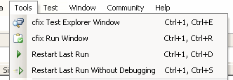
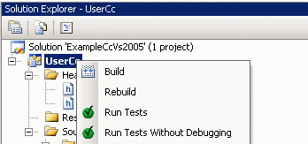

Quick Start
You have successfully installed cfix studio. In the Tools menu, you will now find four new commands: Similarly, the Solution Explorer context menu has been extended by two additional commands: 
For further information, please consult the manual, which can be found in the Help menu: